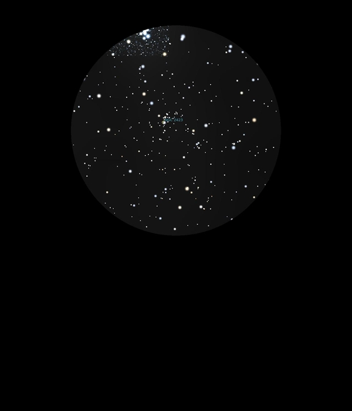

NGC 2423
Open Cluster in Puppis
NGC 2423
Mag 6.7
20/01/17
Observing four Open Clusters which are completely different
from each other but are only a few FOV's away in 24mm
M47 is the brightest, rather ragged and easily visible in
finder scope
In the same 24mm FOV is NGC 2423, very faint and also ragged
and hardly appears as an Open Cluster at all
The most attractive of the four is M46, much fainter
than M47 but far richer and sprinkled with stardust, a really
attractive FOV in 24mm which also takes magnification well
The last Open Cluster of the four is NGC 2414 at mag 7.9, very
sparse and I wonder that it is classified as an Open Cluster
at all, although hints of structure in 8mm